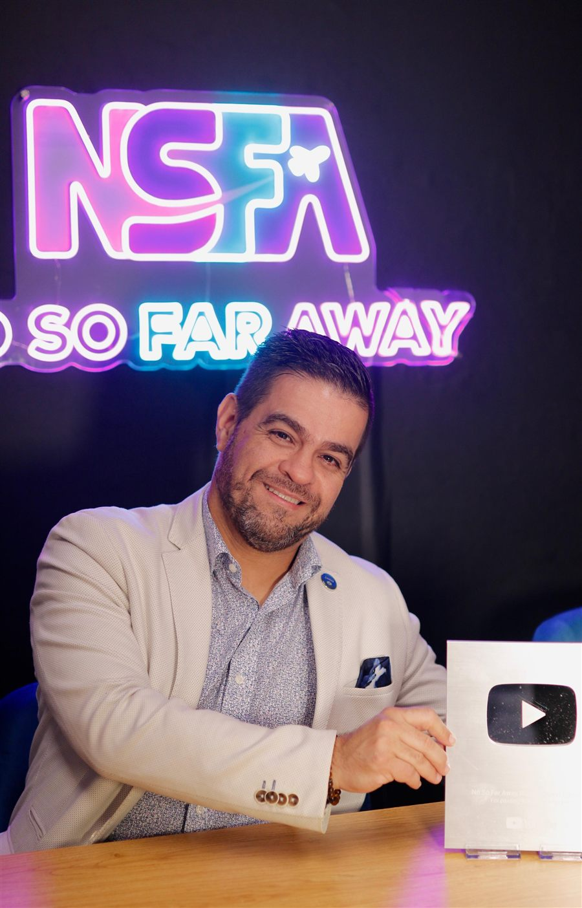

131 mil inscritosAustrália Sem Fronteiras
História · Propósito · Resultados
Quem é Marcelo Lusardo?
Ele não apenas fala sobre recomeçar na Austrália. Ele fez isso.
Marcelo Lusardo deixou para trás uma carreira estável no Brasil pra começar do zero do outro lado do mundo. Com família, filho pequeno e os mesmos medos de quem decide mudar de país, viveu na prática os desafios de construir uma nova trajetória na Austrália.
O que começou como um recomeço se transformou numa história que inspira milhares de brasileiros.
Diretor e sócio da
Expert Education
Uma das principais agências de educação internacional do Brasil, com mais de 23 anos de atuação, ajudando milhares de estudantes a realizarem o sonho de estudar e viver no exterior.
Mais que conteúdo.
Uma missão.
Marcelo criou o Austrália Sem Fronteiras pra compartilhar aquilo que gostaria de ter encontrado quando começou sua própria jornada: direção, conhecimento, conexões e o caminho das pedras.
Além do canal, ele também é autor do livro "Austrália Sem Fronteiras: Do Zero à Residência", onde conta essa travessia sem filtro.
Ele levou anos para construir o caminho.
Agora você pode aprender com quem já atravessou.
A série "A História No So Far Away"
Três partes, uma travessia
Em três entrevistas, Marcelo contou, sem filtro, o que ninguém mostra nos vídeos de "vim, vi e venci": a decisão de largar tudo, o motivo de continuar, e o método que sustentou os dois.
-
Parte 1
A origem e a coragem de recomeçar
Antes da Austrália, havia uma carreira promissora no Brasil. Marcelo tomou a decisão de abandoná-la pra começar do zero, num país onde não conhecia ninguém. Não foi um upgrade de vida, foi um recomeço, com tudo que isso custa.
"Regredi meu salário de 30 mil reais para ganhar 400 dólares por semana. Mas foi essa experiência que me ensinou a valorizar cada conquista."
-
Parte 2
O propósito de abrir o caminho pros outros
Anos depois [CONFIRMAR: período exato], a mesma experiência que doeu virou o motivo de existir do Austrália Sem Fronteiras: usar o que aprendeu na prática (vistos, trabalho, comunidade) pra encurtar a travessia de quem vem depois.
"Estou muito feliz em poder ser um sponsor para tantos brasileiros que sonham em viver e prosperar aqui na Austrália. Isso é o que me move."
-
Parte 3
O método por trás do resultado
Perguntado sobre o que realmente separa quem consegue migrar de quem só sonha, Marcelo não citou sorte. Citou plano, construído em cima dos pontos fortes de cada pessoa, não de uma fórmula genérica.
"O segredo é traçar um plano baseado nos seus pontos fortes e nunca desistir, por mais difícil que pareça."
▶ Assista à travessia completa, sem cortes
Não é só o canal dele que fala nisso
Chamado por fora pra falar de migração
Marcelo já foi convidado como fonte por veículos e podcasts fora do próprio canal. É o tipo de validação que não dá pra comprar com edição.
Podcast Pé na Austrália · 41 mil visualizações
Hoje
De quem precisava de um plano a quem constrói o plano dos outros
Marcelo dirige o programa Austrália Sem Fronteiras, apoiando brasileiros nos vistos de estudo, trabalho e residência. Muitos deles hoje estão espalhados por Sydney, Melbourne, Perth, Brisbane e Gold Coast.
O papel que ele descreve como sponsor não é figura de linguagem: é o compromisso de abrir a porta que, pra ele, ninguém abriu de graça.
Os 3 pilares do método
- 01Resiliência
- 02Coragem
- 03Persistência
Sua travessia pode começar hoje
Quer o mesmo plano que tirou Marcelo do zero e o colocou aqui?
Faça seu check-in gratuito e descubra qual caminho pra Austrália faz sentido pro seu momento.
Fazer meu check-in gratuito